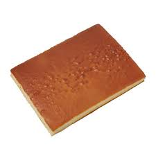

Have you discovered the efficiency of box cakes, but are turned off by how crappy they are? Then buckle in because I am going to show you how to turn box cakes into something actually edible!
Need a faster sugar high? Try my Mug Brownie recipe!